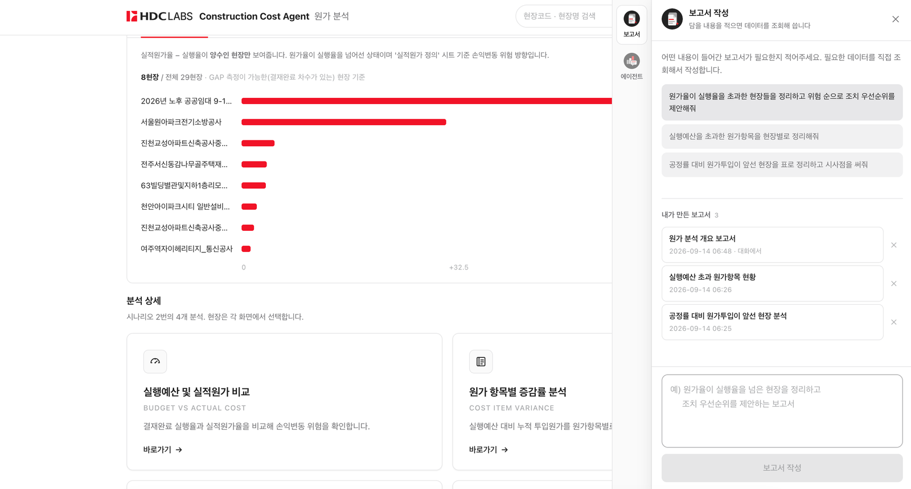
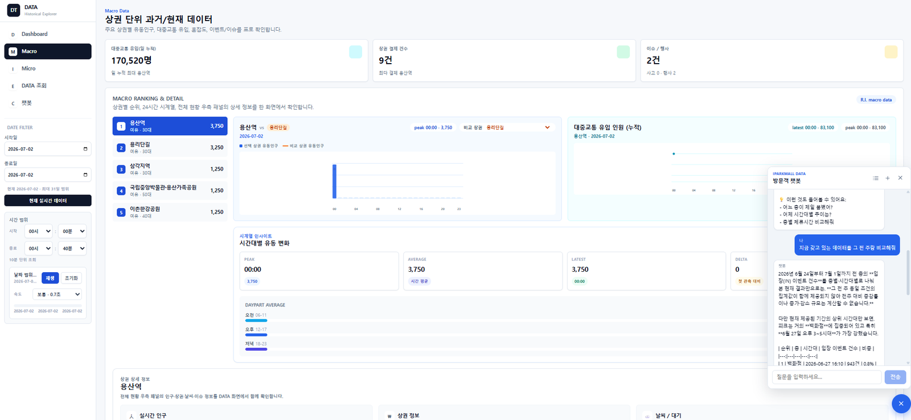
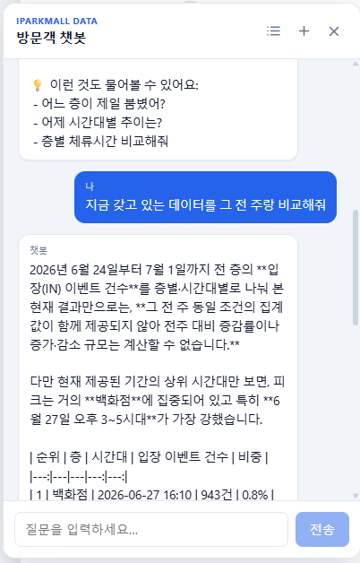
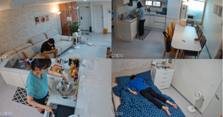
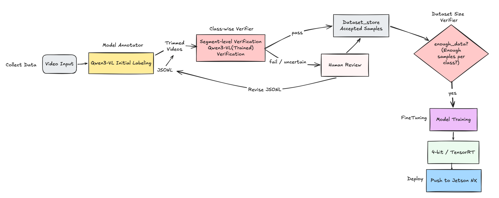
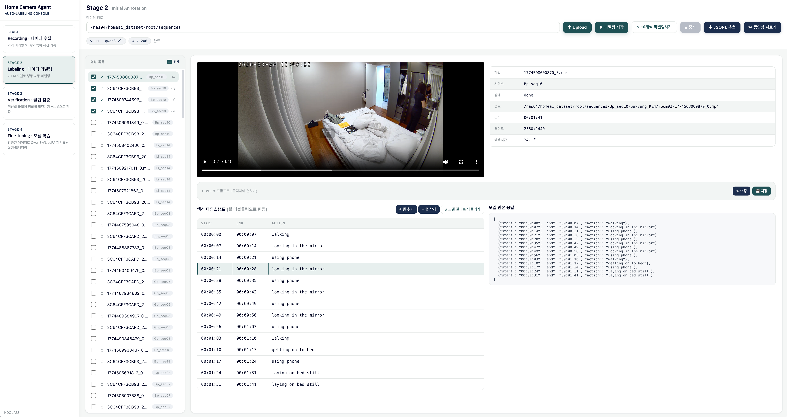
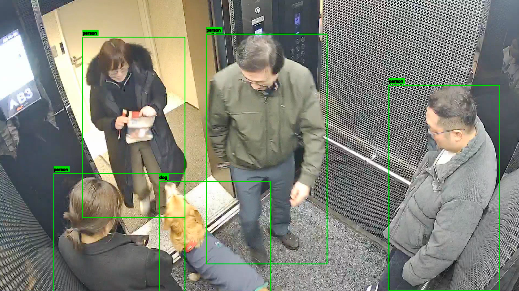
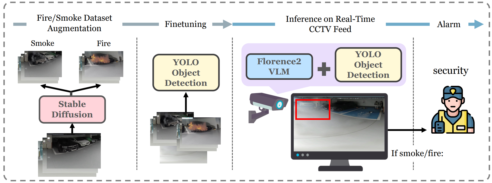

HDC LABS
VLM / LLM
Video Understanding
Multimodal AI
AI Agent
AX Engineering
PM / PL
업무 및 활동Work & Activities
-
2024.11 – 2025.02지하주차장 화재 탐지 모델 개발Underground Parking Fire DetectionAI 엔지니어AI Engineer
-
2025.02 – 2025.03
-
2025.06 ~차세대 홈 AI Agent 시스템Next-Gen Home AI Agent SystemPL · PMPL · PM
-
2026.05 – 2026.07아이파크몰 인사이트 에이전트 PoCIParkMall Insight Agent PoC인사이트 에이전트 개발Insight-agent development
-
2026.08 ~공사현장 원가분석 에이전트 PoCConstruction-Site Cost Analysis Agent PoCPM · AX 에이전트 개발PM · AX agent development
-
2024 – 2026지적재산권 확보Intellectual Property발명자Inventor특허 6건 등록 · 1건 출원, 국제 학회 논문 4편6 patents granted · 1 application, 4 papers at international venues
프로젝트Projects
프로젝트를 선택하면 아래에 상세 내용이 표시됩니다 Select a project to view its details below
공사현장 원가분석 에이전트 PoC (2026.08 ~ 진행 중) Construction-Site Cost Analysis Agent PoC (2026.08 ~ Present)
핵심 역할Key role
PM · AX 에이전트 개발 — 현업 프로세스 정의, 데이터 가용성 검증, 에이전트 구조 설계·구현PM · AX agent development — business-process definition, data-availability validation, agent architecture design & implementation
적용 대상Target공사현장 원가관리 실무 — 현장별 원가 자료 대조·이상 징후 점검 업무Construction-site cost management — per-site cost reconciliation and anomaly checks
연동 대상Integration사내 ERP(현장 · 실행예산 · 실적원가 · 공종별 원가) · 본사 원가관리 기준·산식 · 리스크 보고서In-house ERP (sites, execution budgets, actual costs, cost by work type) · HQ cost-management rules & formulas · risk reports
핵심 기능Core features사내 ERP 원가 데이터를 LLM Tool Calling으로 조회·분석하고, 이상 징후 탐지부터 원인 분석·리스크 보고서 생성까지 수행하는 원가관리 AX AgentA cost-management AX agent that queries and analyzes in-house ERP cost data via LLM tool calling — from anomaly detection through root-cause analysis to risk-report generation
목표Goal담당자가 현장별 원가 자료를 엑셀로 대조하던 과정을 에이전트 질의로 처리하는 원가관리 AX 전환Move cost management to AX — replacing manual per-site Excel reconciliation with agent queries

1현업 프로세스 정의 · ERP 데이터 연계Business Process Definition & ERP Data Integration
담당 업무Responsibilities
- ERP 기반 원가관리 Workflow 설계 — 데이터 입력 → AI 분석 → 이상 징후 탐지 → 손실 예측 → 경영진 보고의 5단계 정의 및 단계별 agentic workflow 구조화
- 사내 ERP 데이터 연동 — 현장·실행예산·실적원가·공종별 원가 데이터를 ERP와 연계하고, Agent가 자연어 질의에 따라 필요한 데이터를 조회할 수 있는 Data Tool 구현
- 데이터 가용성 기반 PM — 현업과 단계별 필요 데이터를 정의하고 ERP 가용 항목과 대조해 분석 가능 지표·Agent 수행 범위 및 우선순위 확정
- ERP-based cost-management workflow — defined five stages (data input → AI analysis → anomaly detection → loss forecasting → executive reporting) and structured an agentic workflow for each stage
- In-house ERP integration — linked site, execution-budget, actual-cost, and cost-by-work-type data from the ERP, and implemented Data Tools that let the agent fetch the data a natural-language query needs
- Data-availability-driven PM — defined the data each stage needs with the business team and checked it against available ERP fields to fix the analyzable metrics, the agent's scope, and priorities
2LLM Agent OrchestrationLLM Agent Orchestration
담당 업무Responsibilities
- Domain Tool 설계 — 본사 원가관리 기준·산식을 Agent가 호출 가능한 Tool로 구조화해 도메인 업무 로직을 실행 가능한 기능으로 구현
- Business Logic Guardrail — 원가 산출을 LLM에 맡기지 않고 검증된 표준 Tool 사용을 강제해 업무 기준과 수치 일관성 확보
- 사내 Agent 인프라 · MCP 서비스화 — 사내 폐쇄망 LLM 서빙 및 MCP 기반 공통 Tool 분리·Docker 배포로 보안성과 Agent 간 재사용성 확보
- Domain tools — structured HQ cost-management rules and formulas as agent-callable tools, turning domain business logic into executable functions
- Business-logic guardrail — cost calculations are never left to the LLM; the agent is forced to use validated standard tools, keeping business rules and figures consistent
- In-house agent infra & MCP services — air-gapped in-house LLM serving, with shared tools split out as MCP services and deployed via Docker for security and reuse across agents
업무 성과Achievements
- 현업 원가관리 프로세스 5단계 정의 및 PoC 범위 확정
- 담당자가 현장별 원가 자료를 엑셀로 대조하던 과정을 AX 전환으로 에이전트 질의로 처리하도록 설계
- Defined the 5-stage cost-management process and fixed the PoC scope
- Designed the AX shift that turns manual per-site Excel reconciliation into agent queries
기술 스택Tech stack
AI AgentTool CallingMCPERP IntegrationOn-Prem LLM ServingDockerPM
아이파크몰 인사이트 에이전트 PoC (2026.05 – 2026.07) IParkMall Insight Agent PoC (2026.05 – 2026.07)
핵심 역할Key role
인사이트 에이전트 개발 — 데이터·지식 오케스트레이션, Agentic Workflow 설계, 평가·Guardrail 체계 구축Insight-agent development — data/knowledge orchestration, agentic workflow design, evaluation & guardrail framework
적용 대상Target아이파크몰 마케팅 실무 — 방문객 데이터 기반 인사이트 분석 업무IParkMall marketing operations — insight analysis over visitor data
연동 대상Integration내부 방문객 DB · 외부 API · 웹 크롤링한 매장·공지·이벤트 정보(RAG Knowledge Base) · 인사이트 대시보드Internal visitor DB · external APIs · web-crawled store, notice, and event information (RAG knowledge base) · insight dashboard
핵심 기능Core features자연어 질의 기반 데이터 조회·비교·원인 분석·인사이트 도출을 수행하는 마케팅 AX 에이전트A marketing AX agent that performs data lookup, comparison, root-cause analysis, and insight generation from natural-language queries
목표Goal정형 대시보드 조회에 머물던 데이터 활용을 자연어 질의 기반 분석 업무로 전환하고, 그 신뢰성을 담보하는 평가·Guardrail 체계 구축Shift data use from static dashboard lookups to natural-language analytical work, and build the evaluation/guardrail framework that makes it trustworthy


1데이터 · 지식 오케스트레이션Data & Knowledge Orchestration
담당 업무Responsibilities
- 질의 중심 Context 설계 — 질의 유형별 필요한 데이터 범위, 분석 기준 및 응답 Context 구성 규칙을 설계해 불필요한 LLM 입력 최소화
- 정형·비정형 Knowledge 통합 — 방문객 DB·외부 API의 정형 데이터와 웹 크롤링한 매장·공지·이벤트 정보를 RAG Knowledge Base로 구성해 분산된 정보 접근 구조 통합
- Data Orchestration — 질의에 따라 정형 DB·API·vector DB 중 필요한 Knowledge Source를 선택·조합해 데이터 비교·원인 분석 구조화
- Query-centric context design — designed, per query type, the required data scope, analysis criteria, and response-context rules, minimizing unnecessary LLM input
- Structured & unstructured knowledge — combined structured data from the visitor DB and external APIs with web-crawled store, notice, and event information in a RAG knowledge base, unifying access to scattered information
- Data orchestration — selects and combines the knowledge sources a query needs (structured DB, APIs, vector DB) to structure data comparison and root-cause analysis
2Agentic Workflow 기반 분석 업무 자동화Analytics Automation via Agentic Workflow
담당 업무Responsibilities
- Intent Routing — 임베딩 기반으로 질의를 분류해 경량 질의는 저비용 경로로 응답하고, 데이터 분석 질의만 에이전트로 라우팅해 Agentic Workflow의 시간 지연 절감
- Multi-Step Analysis Agent — 복합 분석 업무를 단계별 Task로 구조화해, 조회 결과가 다음 분석으로 이어지는 Agent Workflow 설계
- 평가 · Guardrail 체계 구축 — 정책 위반 차단·데이터 범위 밖 질의 거절·환각 방지를 위한 Guardrail과, 13개 카테고리 260문항에 대한 자동 채점 + LLM Judge 이중 평가 적용
- Intent routing — classifies queries with embeddings so lightweight ones answer on a low-cost path and only analytical queries route to the agent, cutting agentic-workflow latency
- Multi-step analysis agent — broke complex analysis work into step-wise tasks, designing an agent workflow where each lookup result feeds the next analysis
- Evaluation & guardrails — guardrails that block policy violations, refuse out-of-scope queries, and prevent hallucination, plus dual automatic-scoring + LLM-judge evaluation over 260 questions across 13 categories
업무 성과Achievements
- 자연어 기반 마케팅 데이터 분석 인사이트를 제공하는 멀티 에이전트 개발
- 자동 채점 + LLM Judge 이중 평가 체계 구축
- 자동 채점 정확도 8.7%p 향상
- 단순 질의 응답시간 17초 → 0.4초 단축
- Built a multi-agent system delivering marketing data-analysis insights from natural language
- Established a dual evaluation framework: automatic scoring + LLM judge
- Improved auto-scoring accuracy by 8.7%p
- Cut simple-query response time from 17s to 0.4s
기술 스택Tech stack
Multi-AgentTool CallingMCPRAGIntent RoutingGuardrailLLM-as-JudgeContext EngineeringLangGraphPython
차세대 홈 AI Agent 시스템 (2025.06 ~ 진행 중) Next-Gen Home AI Agent System (2025.06 ~ Present)
핵심 역할Key role
PL / PM · 기여도 35% — 시스템 통합, 행동인식 모델 개발, 엣지 배포 (데이터셋·라벨링 툴 포함)PL / PM · 35% contribution — system integration, action-recognition model development, edge deployment (incl. dataset & labeling tool)
적용 환경Environment실제 주거 공간 (거실·방·부엌) · 모델하우스Real living spaces (living room/bedroom/kitchen) · model house
연동 대상Integration카메라·IoT 가전·월패드 (자체 플랫폼)Cameras, IoT appliances, wall pad (in-house platform)
핵심 기능Core featuresVideoLLM 기반 행동·물체·얼굴 인식 + LLM 에이전트 개인화·가전 제어VideoLLM-based action/object/face recognition + LLM-agent personalization & appliance control
목표Goal실제 주거 환경에서 안정 동작하는 Vision AI 시스템 · 모델하우스 시범 운영A Vision AI system that runs reliably in real homes · model-house pilot
협업Collaboration인프라파트(DB·월패드), NLP파트(LLM 에이전트), 온디바이스 담당Infra (DB/wall pad), NLP (LLM agent), on-device teams
1행동인식 데이터셋 구축 및 자동화 라벨링 툴 개발Action-Recognition Dataset & Auto-Labeling Tool
담당 업무Responsibilities
- 행동인식 문제 정의 및 데이터 기준 수립 — 다중 카메라 고해상도 영상 기반으로 집 안 사용자 행동 클래스를 정의하고, 클래스 중첩·행동 경계 모호성·유사 행동 혼동 사례를 분석해 모델 학습용 데이터 수집 기준 정리 (600개 이상 영상·65개 이상 액션 → 15개 핵심 클래스)
- 에이전트 기반 데이터셋 검수 프로세스 설계 — VideoLLM(Qwen3-VL) 1차 라벨 생성 → Agent 품질 검수(라벨 적합성·유사 클래스 혼동·클립 편집 적정성) → Human Review 대상 선별
- 학습/평가 데이터셋 구축 — 정제된 클래스와 검수된 annotation을 기반으로 모델 학습 및 평가용 행동인식 데이터셋 구축 (648개, 2560×1440)
- 촬영 → 라벨링 → 검증 → 학습 → 배포로 이어지는 End-to-End 5단계 자동화 라벨링 툴 개발
- Problem definition & data criteria — defined in-home user action classes from multi-camera high-resolution video, and analyzed class overlap, ambiguous action boundaries, and similar-action confusions to set data-collection criteria for training (600+ videos, 65+ actions → 15 core classes)
- Agent-based dataset review — VideoLLM (Qwen3-VL) first-pass labels → agent quality review (label validity, similar-class confusion, clip-trim adequacy) → selection of items for human review
- Training/evaluation dataset — built the action-recognition dataset for training and evaluation from the refined classes and reviewed annotations (648 clips, 2560×1440)
- Built an end-to-end 5-stage auto-labeling tool: filming → labeling → verification → training → deployment



2비전 AI 통합 시스템 아키텍처 설계Vision AI System Architecture
담당 업무Responsibilities
- 통합 아키텍처 설계 — 다중 카메라 입력과 행동·객체·얼굴 인식 모델 추론 구조 통합 (Camera/RTSP → 전처리 → VideoLLM 추론 → DB → AI Agent 비동기 실시간 파이프라인)
- 모듈화 병렬 적용 — 얼굴·객체·행동 기능별 모듈화로 복수 모델 추론 병목 완화 및 메모리 사용 효율 개선
- DB 및 AI Agent 연동 — 모듈별 추론 결과를 통합해 Agent 활용 및 개인화 이벤트 정보로 DB 연동 (Kafka 기반으로 "의미 있는 상태 변화"만 전달)
- Integrated architecture — unified multi-camera input with action, object, and face recognition inference (asynchronous real-time pipeline: Camera/RTSP → preprocessing → VideoLLM inference → DB → AI Agent)
- Modular parallelism — split face, object, and action into separate modules to relieve multi-model inference bottlenecks and improve memory efficiency
- DB & AI agent integration — merged per-module inference results into the DB as personalized event data for the agent (only "meaningful state changes" published over Kafka)
3행동인식 모델 · 알고리즘 개발Action-Recognition Model & Algorithm
담당 업무Responsibilities
- 프롬프트 엔지니어링 — 행동 클래스 정의와 단일 선택형 출력 구조를 반영한 프롬프트로 개선해 추론 안정성 향상
- 오류 분석 기반 성능 개선 — 유사 행동 혼동 사례를 분석해 행동 클래스 정의와 평가 기준을 반복 개선
- 모델 성능 검증 — 다양한 VideoLLM 후보 모델(Qwen-VL, VideoLLaMA3 등)을 동일한 행동인식 평가셋에서 비교 검증
- Prompt engineering — reworked prompts around the action-class definitions and a single-choice output format, improving inference stability
- Error-driven improvement — analyzed similar-action confusions and iteratively refined class definitions and evaluation criteria
- Model validation — compared candidate VideoLLMs (Qwen-VL, VideoLLaMA3, …) on the same action-recognition evaluation set
4엣지 배포 검증 리딩Leading Edge-Deployment Validation
담당 업무Responsibilities
- 엣지 배포 검증 기준 수립 — Jetson NX 환경에서 모델별 처리 속도·정확도·실행 가능성을 비교 기준으로 정의하고 테스트 범위 조율
- NX 구동 테스트 및 이슈 조율 — NX 담당자와 모델 실행 과정의 환경 설정·구동 실패·처리 지연 이슈를 점검하고, 모델별 테스트 범위와 실행 조건 조율
- 실시간 서비스 적용 — 5초 영상 평균 2.9초 처리 결과와 모델별 엣지 성능표를 기반으로, 실제 주거 환경에서 실시간 행동인식 서비스로 적용
- Edge validation criteria — defined per-model throughput, accuracy, and feasibility on Jetson NX as the comparison criteria and coordinated test scope
- NX testing & issue coordination — worked with the NX engineer through environment setup, launch failures, and latency issues, coordinating per-model test scope and run conditions
- Real-time service — based on 2.9s average processing per 5s clip and the per-model edge benchmark, deployed as a real-time action-recognition service in real homes
성과Achievements
- 행동 분류 정확도 18%p 향상
- 행동인식 모델 Jetson NX 4bit/NF4 배포
- 다중 비전 모델 추론 시스템 에이전트 연동
- 촬영 → 라벨링 → 검증 → 학습 → 배포 5단계 자동화 라벨링 툴 개발
- 행동인식 기반 IoT 가전 제어 특허 등록KR 10-2971047
- 실거주 환경 PoC 시연 진행
- Improved action-classification accuracy by 18%p
- Deployed the action-recognition model to Jetson NX in 4-bit/NF4
- Connected the multi-vision-model inference system to the agent
- Built a 5-stage auto-labeling tool: filming → labeling → verification → training → deployment
- Patent granted: action-recognition-based IoT appliance controlKR 10-2971047
- Demonstrated the PoC in a real residential environment
기술 스택Tech stack
VideoLLMPrompt EngineeringVLM Fine-tuning4bit / NF4Jetson NXData ConstructionKafkaPythonPL / PM
엘리베이터 내부 상황 분석 시스템 PoC (2025.02 – 2025.03) In-Elevator Situational Analysis System PoC (2025.02 – 2025.03)
핵심 역할Key role
기여도 30% — 반려견 탑승 인식 모델 및 알고리즘 개발30% contribution — pet-boarding detection model & algorithm
적용 환경Environment엘리베이터 카 내부 상단 모서리 CCTV 시점Inside the elevator car, top-corner CCTV viewpoint
핵심 기능Core featuresVLM 파인튜닝 기반 반려견 탑승 인식 + 목줄 끼임 사고 예방 알고리즘VLM-fine-tuned pet-boarding detection + leash-entrapment prevention algorithm
목표Goal승강기 혼잡도·대기 시간 감소, 이상 행동 탐지, 반려견 목줄 끼임 사고 예방 AI 운영 시스템An AI operation system that reduces congestion/wait time, detects anomalies, and prevents pet-leash entrapment
협업Collaboration현대엘리베이터Hyundai Elevator

1반려견 탑승 인식 모델 및 알고리즘 개발Pet-Boarding Detection Model & Algorithm
기존 문제점Problem
- 엘리베이터 CCTV는 상단 모서리에서 내려다보는 비정형 시야각을 가지며, 기존 모델로는 반려견의 탑승 여부를 정확히 판단하기 어려움
- Elevator CCTVs use an atypical top-corner viewpoint, making pet-boarding judgments unreliable with off-the-shelf models
담당 업무Responsibilities
- 탑승 데이터 수집 및 구축 — 실제 엘리베이터 환경에서 촬영된 반려견 탑승 영상을 수집·정제·라벨링하고, 엘리베이터 CCTV 시점 기반 생성형 반려견 합성 데이터를 추가해 학습 데이터셋 확장
- VLM 모델 적용 — 상단 CCTV의 비정형 시야각으로 반려견이 작게 보이거나 가려지는 문제를 반영한 수집 데이터를 기반으로 VLM을 반려견 탐지 태스크에 맞게 커스터마이징하고, 엘리베이터 환경 특성을 반영해 모델 학습
- 유사 객체 혼동 개선 — 반려견과 인형·가방 등 유사 객체 간 혼동 사례를 분석하고, 평가 데이터 구성 및 모델 개선을 통해 유사 객체 구분
- 탑승 시점 판단 알고리즘 개발 — 문 열림/닫힘 시점을 기준으로 사람과 반려견의 동시 탑승 여부를 판단하는 알고리즘을 구현해 목줄 끼임 사고 예방 가능성 검증
- Boarding data construction — collected, cleaned, and labeled real in-elevator pet videos, and extended the training set with generative synthetic pet data rendered from the elevator-CCTV viewpoint
- VLM adaptation — customized a VLM for pet detection on data reflecting the top-corner CCTV view, where dogs appear small or occluded, and trained it for elevator-environment characteristics
- Similar-object confusion — analyzed confusions between dogs and look-alike objects (plush toys, bags) and separated them through evaluation-set design and model improvements
- Boarding-moment algorithm — implemented door open/close-based logic that judges simultaneous boarding of a person and a pet, validating its potential to prevent leash-entrapment accidents
업무 성과Achievements
- 반려견 탑승 탐지 정확도 57% → 87.5% 향상
- 반려견과 유사 객체(인형 등) 구분 정확도 91% 달성
- '사용자로그를 고려한 엘리베이터 내부의 반려동물 유무 탐지방법 및 시스템' 특허 등록KR 10-2876730
- HDC랩스·HDC현대산업개발·현대엘리베이터 업무 협약 체결HDC현산, 서울원 아이파크에 AI 승강기 도입 ↗
- 합성 데이터 생성 연구로 후속 논문 게재합성 데이터 생성 자동화 (WACVW 2026, Oral)
- Improved pet-boarding detection accuracy from 57% to 87.5%
- Achieved 91% accuracy in distinguishing pets from similar objects (e.g., plush toys)
- Patent granted: detecting pets inside an elevator considering user logsKR 10-2876730
- Three-party MOU among HDC LABS, HDC Hyundai Development, and Hyundai ElevatorHDC to deploy AI elevators at Seoul One IPARK ↗
- Follow-up paper from the synthetic-data researchAutomated synthetic data generation (WACVW 2026, Oral)
지하주차장 화재 탐지 모델 개발 (2024.11 – 2025.02) Underground Parking Fire Detection (2024.11 – 2025.02)
핵심 역할Key role
기여도 40% — VLM 통합 알고리즘 개발, VLM 모델 비교 선정40% contribution — VLM-integrated algorithm, VLM model benchmarking & selection
적용 환경Environment지하주차장 (전기차 충전구역)Underground parking (EV charging zone)
연동 대상Integration자체 플랫폼In-house platform
핵심 기능Core featuresYOLO 기반 연기/불 탐지 + VLM 기반 상황 인식YOLO-based smoke/fire detection + VLM-based situational awareness
목표Goal화재 예방과 신속한 대응을 위한 AI CCTV 화재 탐지 솔루션 개발An AI CCTV fire-detection solution for prevention and rapid response
협업Collaboration수호이미지랩스(CCTV 전문기업)Suho Image Labs (CCTV specialist)

1VLM 모델 통합 알고리즘 개발VLM-Integrated Detection Algorithm
기존 문제점Problem
- YOLO 모델은 실시간 처리와 객체 위치 탐지에 강점이 있으나, 연기·초기 화염 단계에서는 정확도 및 민감도(Recall)가 낮은 한계 존재
- YOLO excels at real-time localization but suffers low accuracy and recall on smoke and early-stage flames
담당 업무Responsibilities
- 연산량은 크지만 정밀한 판단이 가능한 VLM을 병렬적으로 활용하는 상황 인식 구조 도입
- YOLO는 모든 프레임에 대해 추론을 수행하여 실시간성 유지, VLM은 초당 3프레임만 선택적으로 추론하도록 설정해 연산 자원 사용 최소화
- VLM이 화재 가능성을 먼저 인지한 경우 YOLO의 confidence threshold를 동적으로 조정해 더 민감하게 화재를 탐지하도록 유도
- Introduced a situational-awareness structure that runs a compute-heavy but precise VLM in parallel with YOLO
- Kept YOLO inferring on every frame for real-time coverage while limiting the VLM to 3 selected frames per second to minimize compute
- When the VLM first senses a possible fire, it dynamically lowers YOLO's confidence threshold so YOLO detects fire more sensitively
2VLM 모델 비교 선정VLM Benchmarking & Selection
담당 업무Responsibilities
- BLIP1, BLIP2, LLaVA2, Gemma3, VideoLLaMA 등 다양한 VLM을 대상으로 FPS·정확도·탐지 지연 시간·모델 크기 기준 비교 실험 수행
- 지하주차장 서버 환경의 연산 자원 제약과 실시간 요구 조건을 종합 고려해 화재 탐지 성능과 처리 속도가 가장 적합한 Florence2를 최종 모델로 선정
- 환경 및 하드웨어 조건 변화에 따라 최적 모델을 선택할 수 있도록 다양한 VLM에 대한 비교 분석 지속 수행
- Benchmarked VLMs including BLIP1, BLIP2, LLaVA2, Gemma3, and VideoLLaMA on FPS, accuracy, detection latency, and model size
- Selected Florence2 as the final model — the best fire-detection performance and throughput under the parking-server compute constraints and real-time requirements
- Continuously re-evaluating VLMs so the optimal model can be chosen as environments and hardware change
업무 성과Achievements
- 최초 화재 탐지 시간 단축 — 6.51s → 3.03s
- Recall 0.835 → 0.904 향상
- ICLR 2025 워크샵 ICBINB 논문 게재An Integrated YOLO and VLM System for Fire Detection in Enclosed Environments (ICLRW 2025)
- '인공신경망 기반의 복합모델을 이용한 주차장 화재 탐지 방법 및 시스템' 특허 등록KR 10-2857163
- 광명 센트럴 아이파크 · 한국타이어 금산공장 화재 탐지 AI CCTV 상용 도입
- Cut first fire-detection time from 6.51s to 3.03s
- Improved recall from 0.835 to 0.904
- Published at the ICLR 2025 ICBINB workshopAn Integrated YOLO and VLM System for Fire Detection in Enclosed Environments (ICLRW 2025)
- Patent granted: parking-lot fire detection using an ANN-based composite modelKR 10-2857163
- Commercial AI CCTV fire-detection deployments at Gwangmyeong Central IPARK and the Hankook Tire Geumsan plant